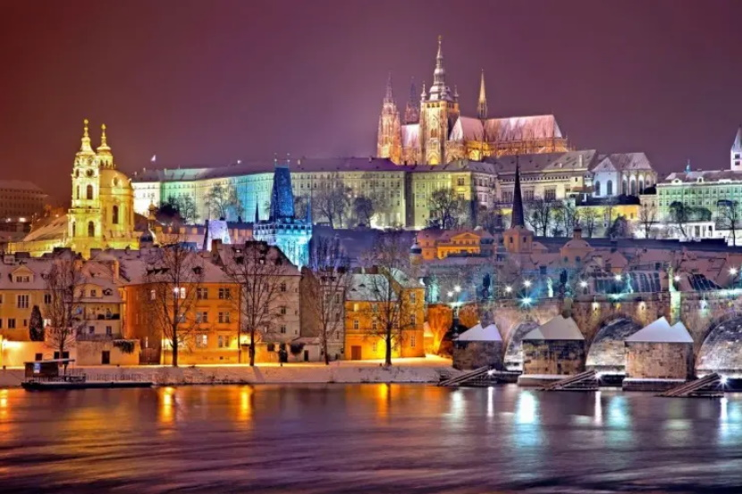
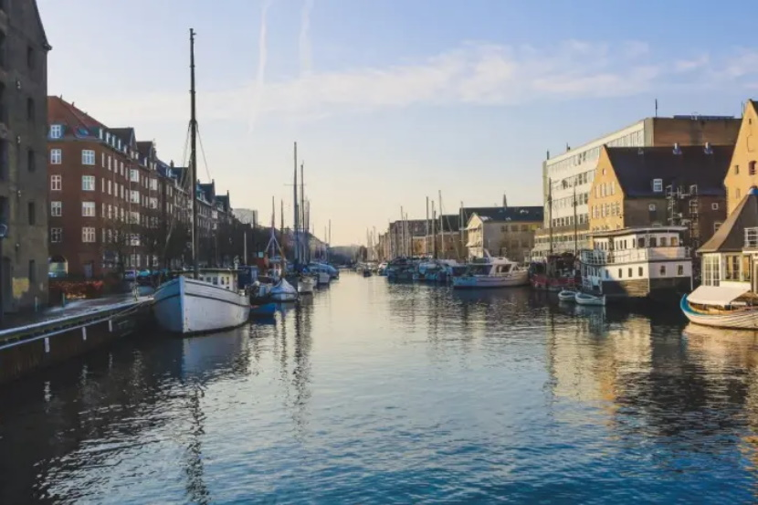
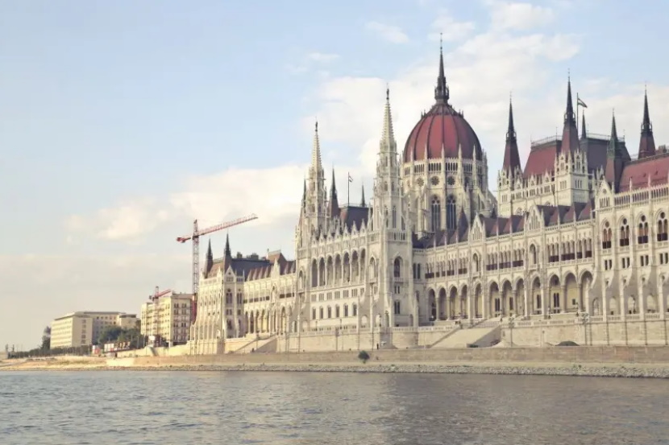
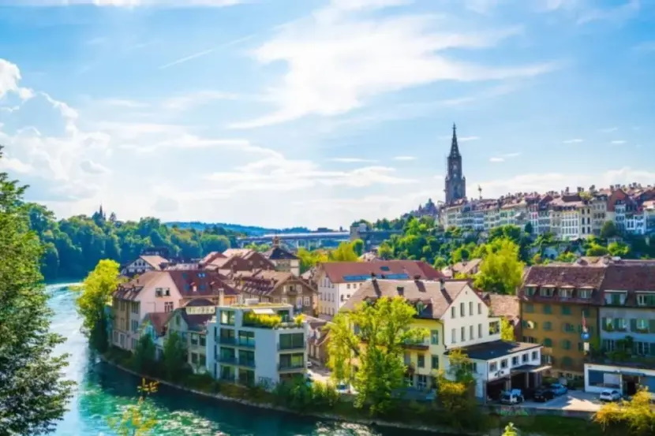

Paryż to jedno z najbardziej romantycznych i pięknych miast na świecie, które przyciąga miliony turystów każdego roku. Słynie z wyjątkowego uroku, który zawdzięcza licznym zabytkom, krętym uliczkom, mostom czy parkom. Kawiarnie ciągną się tu wzdłuż brukowanych ulic, a elegancko ubrani ludzie spacerują wzdłuż Sekwany. Każda dzielnica wydaje się mieć swój własny ikoniczny punkt orientacyjny, czy to Bazylika Sacré-Cœur czy Wieża Eiffla. Paryż jest również jednym z najważniejszych centrów kultury i sztuki na świecie. Znajdują się tu Luwr, Musée d'Orsay i Centre Pompidou, które przyciągają miłośników sztuki z całego świata.

Praga to bez wątpienia jedno z najbardziej urokliwych miast w Europie. Jej małomiasteczkowy charakter w połączeniu z historycznymi budynkami i bulwarami jeszcze bardziej potęguje jej urok i magię. Praga to miasto o niezwykłej architekturze, zabytkach i tajemniczych legendach. Słynie również z klimatycznych restauracji i barów serwujących Absynt. Praga to wspaniała opcja dla ludzi spragnionych relaksu w pięknym, spokojnym miejscu, a jednocześnie chcących doświadczyć typowej, europejskiej kultury. W mieście odkryć można również wiele ciekawych architektonicznych atrakcji.

Kopenhaga, stolica Danii, to miasto pełne uroku, historii i nowoczesności. Po odrobinę zabawy wybierz się do parku tematycznego i ogrodów Tivoli. Miłośnicy historii powinni natomiast wpisać na swoją listę Muzeum Narodowe Danii, Zamek Rosenborg oraz słynny Cmentarz Asystentów. Koniecznie warto zwiedzić również słynne kolorowe domu w porcie Nyhavn. Zdecydowanie musisz zobaczyć je na własne oczy! Duński styl życia hygge znany jest na całym świecie. W Kopenhadze można odnaleźć ten styl w wielu miejscach, m.in. w knajpkach, kawiarniach, sklepach z antykami i wypiekami.

Budapeszt to miasto, które składa się z dwóch części: Budy i Pesztu. Buda to stara, zabytkowa część miasta, gdzie znaleźć możemy Zamek Królewski czy Górę Gellerta. Pest to nowoczesna część miasta, gdzie znajdują się m.in. główne ulice handlowe, bary i restauracje oraz wiele muzeów.Najlepszy widok na miasto jest jednak w nocy. Przejdź przez most wiszący Széchenyi lánchíd i podziwiaj piękno Országház!

Berno to coś więcej niż tylko polityczne centrum Szwajcarii. To także jedno z najpiękniejszych miejsc w kraju. Zbudowany wokół rzeki Aare, miasto oferuje spektakularne widoki z niemal każdego kąta. Warto również zwrócić uwagę na urokliwe, kręte uliczki i piękne Stare Miasto wpisane na listę UNESCO. Jest to istny labirynt kolorowych domów, krętych uliczek i malowniczych placów, które zachwycą każdego miłośnika historii i architektury.